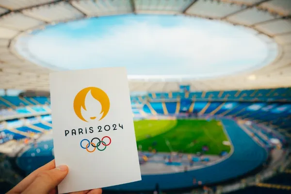

As Olimpíadas de Paris, que acontecerão entre 26 de julho e 11 de agosto de 2024, é o evento mais aguardado pela população brasileira neste ano. Sem dúvida alguma é um evento que tem grande capacidade de impactar a economia e o consumo da população no que tange o mercado de artigos esportivos. É fato que muitos dos brasileiros se interessam mais por esportes durante grandes eventos, como os famosos jogos olímpicos. Sendo assim, essa é a época ideal para promover a prática de esportes, conquistar novos simpatizantes e vender artigos esportivos relacionados. As Olimpíadas de Paris 2024 terão diversas modalidades, sendo duas delas novidades: o breaking e a canoagem slalom extremo. O Brasil estará presente na edição de Paris dos Jogos Olímpicos com mais de 220 atletas, com expectativas de obter mais de 20 medalhas no total.
O Brasil contará com a participação de mais de 210 atletas nas Olimpíadas de Paris 2024. Entre as mais de 30 modalidades esportivas das quais o time brasileiro participará, estão: vôlei, triatlo, futebol, vela, skate, tênis, tiro esportivo, taekwondo, surfe, remo, rugby, natação e ginástica artística.
Uma faceta interessante desse vasto mercado é sua capacidade de impulsionar múltiplos setores empresariais. Quando uma pessoa ingressa em sua jornada na academia, por exemplo, ela se mostra uma cliente de grande potencial para adquirir produtos da tendência fitness, suplementos, acessórios e até mesmo cosméticos voltados para o esporte. Dentro dessas ramificações, a moda fitness atualmente representa cerca de 20% do domínio de vestuário no Brasil, com um valor total estimado em R$141,7 bilhões, segundo a Associação Brasileira de Indústria Têxtil e de Confecção (Abit). Por outro lado, o setor de suplementos gera um movimento de mais de R$ 2 bilhões anualmente, conforme informações da Associação Brasileira dos Fabricantes de Suplementos Nutricionais e Alimentos para Fins Especiais (Brasnutri) e da Associação Brasileira das Empresas de Produtos Nutricionais (Abenutri). A prática de atividades físicas, portanto, não só promove a saúde das pessoas e o bem estar, mas também se apresenta como uma força econômica, responsável por impulsionar milhares de empresas no mercado esportivo brasileiro.
"As próximas Olimpíadas serão realizadas entre os dias 14 e 30 de julho de 2028 com sede em Los Angeles, nos Estados Unidos. A cidade estadunidense, situada no estado da Califórnia, já recebeu os Jogos Olímpicos na edição de 1932 e 1984. A edição de 84 foi marcada pelo boicote da União Soviética." Veja mais sobre "Olimpíadas de Paris 2024" em: https://brasilescola.uol.com.br/educacao-fisica/olimpiadas-de-paris-2024.htm
